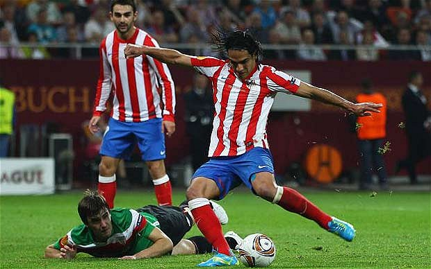

Futbol

Futbol
El fútbol o futbol (del inglés británico football, traducido como balompié) es un deporte de equipo jugado entre dos conjuntos de once jugadores cada uno y algunos árbitros que se ocupan de que las normas se cumplan correctamente. Es ampliamente considerado el deporte más popular del mundo, pues lo practican unas 270 millones de personas.
También se le conoce como futbol asociación o fútbol asociación, nombre derivado de The Football Association, primera federación oficial del mundo en este deporte y que utilizó ese nombre para distinguirlo de otros deportes que incluyen la palabra "futbol" o "fútbol". En algunos países de habla inglesa también se le conoce como soccer, abreviatura de association, puesto que el nombre de football en esos países se asocia mayoritariamente a otros deportes con esa denominación (principalmente en Estados Unidos, donde el nombre football aplica para el fútbol americano, un deporte totalmente distinto).
El terreno de juego es rectangular de césped natural o artificial, con una portería o arco a cada lado del campo. Se juega mediante una pelota que se debe desplazar a través del campo con cualquier parte del cuerpo que no sean los brazos o las manos, y mayoritariamente con los pies (de ahí su nombre). El objetivo es introducirla dentro de la portería o arco contrario, acción que se denomina marcar un gol. El equipo que logre más goles al cabo del partido, de una duración de 90 minutos, es el que resulta ganador del encuentro.
El juego moderno fue reinventado en Inglaterra tras la formación de la Football Association, cuyas reglas de 1863 son la base del deporte en la actualidad. El organismo rector del fútbol es la Federación Internacional de Fútbol Asociación, más conocida por su acrónimo FIFA. La competición internacional de fútbol más prestigiosa es la Copa Mundial de Fútbol, organizada cada cuatro años por dicho organismo. Este evento es el más famoso y el que cuenta con mayor cantidad de espectadores del mundo, doblando la audiencia de los Juegos Olímpicos.6
Caracteristicas del Futbol
- Futbol
- Los partidos se juegan en una cancha rectangular utilizando una bola.
- Solo pueden permanecer en la cancha dos equipos y cada uno de ellos cuenta con 11 jugadores.
- El único jugador que puede tocar la bola con sus manos es el portero.
- La idea principal del juego es poder introducir la bola en la portería contraria para anotar un gol.
- A medio tiempo, los jugadores cuentan con 15 minutos para descansar.
- Cada tiempo del partido tiene una duración de 45 minutos.
Lugares donde mas se desempeña el Futbol
Futbol |
Emiratos Árabes Unidos |
Francia |
Chile |
Portugal |
Lista
Naturaleza del futbol
El fútbol se juega siguiendo una serie de reglas, llamadas oficialmente reglas de juego. Este deporte se practica con una pelota esférica (de cuero u otro material con una circunferencia no mayor a 70 cm y no inferior a 68 cm, y un peso no superior a 450 g y no inferior a 410 g al comienzo del partido), donde dos equipos de once jugadores cada uno (diez jugadores "de campo" y un guardameta) compiten por encajar la misma en la portería rival, marcando así un gol. El equipo que más goles haya marcado al final del partido es el ganador; si ambos equipos no marcan, o marcan la misma cantidad de goles, entonces se declara un empate. Puede haber excepciones a esta regla; véase Duración y resultado más abajo.
La regla principal es que los jugadores, excepto los guardametas, no pueden tocar intencionalmente la pelota con sus brazos o manos durante el juego, aunque deben usar sus manos para los saques de banda.
En un juego típico, los jugadores intentan llevar la pelota hasta la portería rival, lo que se denomina gol, a través del control individual de la misma, conocido como regate, o de pases a compañeros o tiros a la portería, la cual está protegida por un guardameta. Los jugadores rivales intentan recuperar el control de la pelota interceptando los pases o quitándole la pelota al jugador que la lleva; sin embargo, el contacto físico está limitado. El juego en el fútbol fluye libremente, y se detiene solamente cuando la pelota sale del terreno de juego o cuando el árbitro decide que debe detenerse. Luego de cada pausa, se reinicia el juego con una jugada específica. Al final del partido, el árbitro compensa el tiempo total en minutos que se suspendió el juego en diferentes momentos.
A nivel profesional, en la mayoría de los partidos se marcan solo unos pocos goles. Por ejemplo, durante la temporada 2006/07 de la Primera División de España, la liga de fútbol española, se marcó un promedio de 2,48 goles por partido.
Las reglas no especifican ninguna otra posición de los jugadores aparte de la del guardameta, portero o arquero, pero con el paso del tiempo se han desarrollado una serie de posiciones en el resto del campo. A grandes rasgos, se identifican tres categorías principales: los delanteros, cuya tarea principal es marcar los goles; los defensas o defensores, ubicados cerca de su portería, quienes intentan frenar a los delanteros rivales; y los centrocampistas, mediocampistas o volantes, que manejan la pelota entre las posiciones anteriores. A estos jugadores se los conoce como jugadores de campo, para diferenciarlos del guardameta. A su vez, estas posiciones se subdividen en los lados del campo en que los jugadores se desempeñan la mayor parte del tiempo. Así, por ejemplo pueden existir centrocampistas derechos, centrales (de contención) e izquierdos. Los diez jugadores de campo pueden distribuirse en cualquier combinación. Por ejemplo, puede haber cuatro defensas, cuatro centrocampistas y dos delanteros (4-4-2); o tres defensas, cuatro centrocampistas y tres delanteros (3-4-3), y la cantidad de jugadores en cada posición determina el estilo de juego del equipo: más delanteros y menos defensas (por ejemplo 3-3-4) creará un juego más agresivo y ofensivo, mientras que lo contrario (por ejemplo 5-3-2) generará un juego más lento y defensivo. Aunque los jugadores suelen mantenerse durante la mayoría del tiempo en una posición, hay pocas restricciones acerca de su movimiento en el campo. El esquema de los jugadores en el terreno de juego se llama la formación del equipo, y esta, junto con la táctica, es trabajo del entrenador..
Historia del fútbol
La humanidad ha realizado a lo largo de su historia diversos juegos de pelota, desde la Antigüedad. Se conoce que este entretenimiento existía tanto en la cultura del Mar Mediterráneo como en América.15 El hallazgo más antiguo y revelador se remonta a un relieve de la Antigua Grecia (400 a. C.), donde un hombre domina una pelota sobre su muslo. Este deporte era el episkyros,1617 que se jugaba con una pelota de cuero pintada con colores brillantes y dos equipos de 12 a 14 jugadores. La FIFA lo reconoció como una de las formas más antiguas del actual fútbol.18 Más tarde, en Roma, el mismo recibió el nombre de harpastum.
En Europa, ya a finales de la Edad Media y siglos posteriores, se desarrollaron en las islas británicas y zonas aledañas distintos juegos de equipo, a los cuales se los conocía como códigos de fútbol. Estos códigos se fueron unificando con el paso del tiempo, pero fue en la segunda mitad del siglo XVII cuando se dieron las primeras grandes unificaciones del fútbol, que más tarde dieron origen al fútbol de rugby, al fútbol americano, al fútbol australiano y al deporte que hoy se conoce en gran parte del mundo como fútbol a secas.
En otras zonas del mundo también se practicaban juegos en los que una pelota era impulsada con los pies. Entre ellas pueden mencionarse las Reducciones Jesuíticas de la zona guaraní, más específicamente en la de San Ignacio Miní en el siglo XVII, en la región que ahora se conoce como Misiones. El jesuita español José Manuel Peramás escribió en su libro De vita et moribus tredecim virorum paraguaycorum: «Solían también jugar con un balón, que, aún siendo de goma llena, era tan ligero y rápido que, cada vez que lo golpeaban, seguía rebotando algún tiempo, sin pararse, impulsado por su propio peso. No lanzaban la pelota con la mano, como nosotros, sino con la parte superior del pie desnudo, pasándola y recibiéndola con gran agilidad y precisión».
Los primeros códigos británicos se caracterizaban por tener pocas reglas y por su extrema violencia.20 Uno de los más populares fue el fútbol de carnaval. Por dicha razón el fútbol de carnaval fue prohibido en Inglaterra por decreto del rey Eduardo III y permaneció prohibido durante 500 años.21 El fútbol de carnaval no fue el único código de la época; de hecho existieron otros códigos más organizados, menos violentos e incluso que se desarrollaron fuera de las islas británicas. Uno de los juegos más conocidos fue el calcio florentino, originario de la ciudad de Florencia (Italia). Este deporte influenció en varios aspectos al fútbol actual, no solo por sus reglas, sino también por el ambiente de fiesta en que se jugaban estos encuentros.
Organización
El ente rector del fútbol a nivel internacional es la Fédération Internationale de Football Association, más conocida por su acrónimo FIFA, con sede en Zúrich, Suiza. Dicho organismo se plantea 5 puntos principales para garantizar el buen desarrollo del deporte: mejorar el fútbol desde su carácter universal, educativo y cultural, así como mejorar los valores humanos que plantea el mismo; organizar competiciones del deporte; elaborar un reglamento para mantener el espíritu del juego; controlar las distintas formas del fútbol, adoptando medidas para mejorar las mismas; e impedir ciertas prácticas que afecten la esencia del deporte.
La FIFA no se centra únicamente en los detalles organizativos del deporte, sino que también promueve mejoras en la infraestructura futbolística de cada país, en particular en los más pobres, por medio del Programa Goal. El mismo inculca aspectos tácticos, técnicos, de salud y organizativos a las poblaciones de dichos países, ayudándolos a crecer futbolísticamente. El programa no financia la construcción de estadios, pero sí lo hace con terrenos de entrenamiento, material para entrenar y elementos de oficina para las asociaciones.101 En la actualidad, 185 asociaciones nacionales se benefician del programa, el cual ha completado o está trabajando en un total de 292 proyectos.
Debido al constante crecimiento de la FIFA, se han creado a lo largo de la historia seis confederaciones regionales, cuyos objetivos son similares a los de la FIFA. Las mismas están encargadas de coordinar todos los aspectos del deporte en cada región. Para que una asociación sea miembro de una confederación, no necesariamente debe serlo de la FIFA.
A su vez, dentro de cada confederación hay asociaciones de fútbol, las cuales representan a un país y, en algunas ocasiones, un territorio o estado no reconocido internacionalmente. Salvo casos excepcionales, hay una sola asociación por país o territorio, y en caso de existir más de una, solo una puede estar afiliada a su confederación. En algunos casos la asociación principal del país tiene afiliadas otras sub asociaciones para ayudar en la organización del fútbol. Cada asociación organiza el fútbol de su país independientemente de su confederación, pero en algunos casos, por ejemplo para clasificar clubes a torneos internacionales, dichos clubes deben estar avalados por la asociación ante la confederación. En algunos casos, un equipo puede estar afiliado directa o indirectamente a una asociación sin estar afiliado a una confederación. El ente rector del fútbol a nivel internacional es la Fédération Internationale de Football Association, más conocida por su acrónimo FIFA, con sede en Zúrich, Suiza. Dicho organismo se plantea 5 puntos principales para garantizar el buen desarrollo del deporte: mejorar el fútbol desde su carácter universal, educativo y cultural, así como mejorar los valores humanos que plantea el mismo; organizar competiciones del deporte; elaborar un reglamento para mantener el espíritu del juego; controlar las distintas formas del fútbol, adoptando medidas para mejorar las mismas; e impedir ciertas prácticas que afecten la esencia del deporte.
También hay que mencionar a la NF-Board, organización que agrupa a las asociaciones no afiliadas ni a la FIFA, ni a ninguna de sus confederaciones. La gran mayoría de sus asociaciones pertenecen a territorios y estados no reconocidos políticamente a nivel internacional. La única competición de dicho organismo es la Copa Mundial VIVA.
Volver arriba.
Formulario